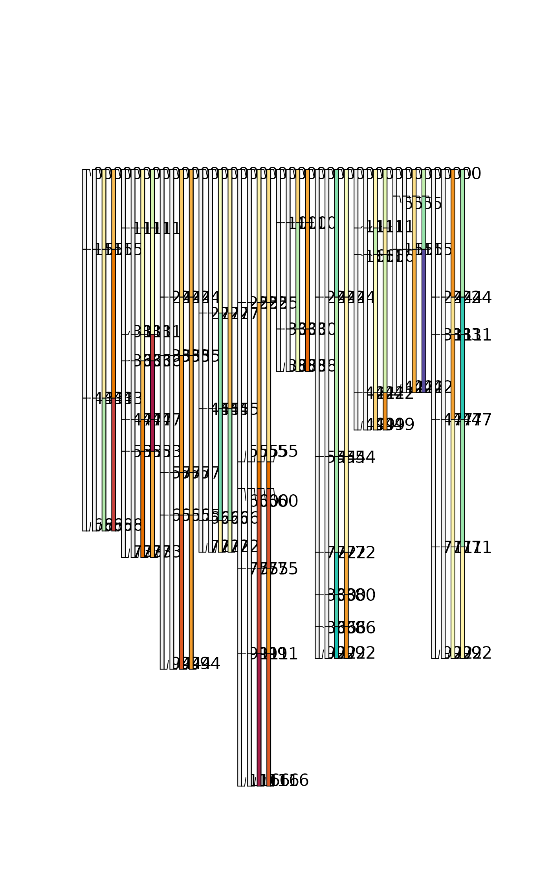
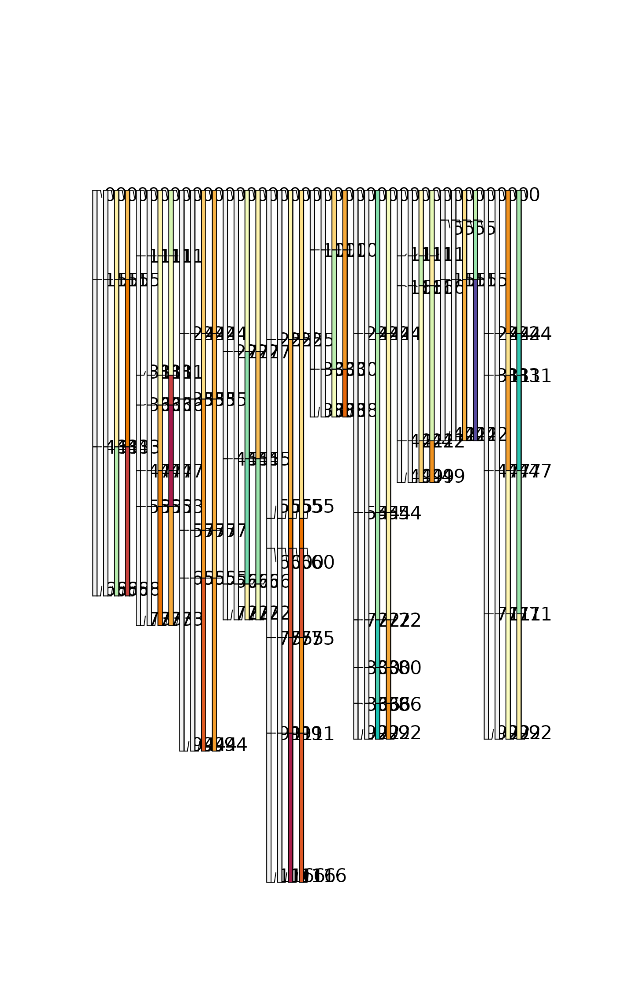
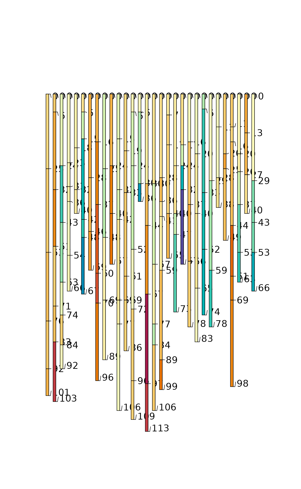
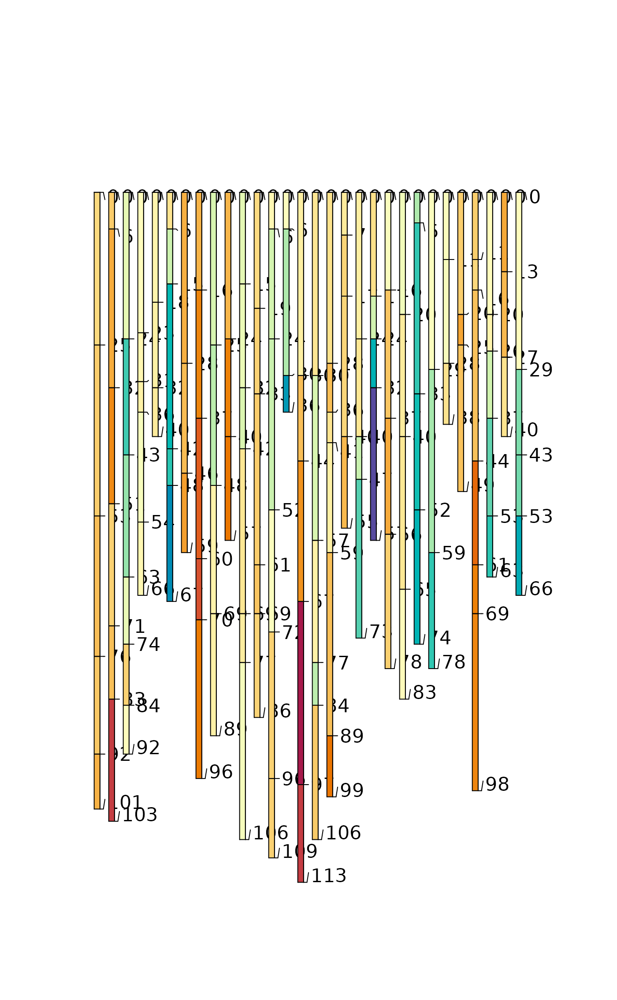

Harmonize a property by profile-level denormalization for convenient visualization or analysis of ranges
Source:R/harmonize.R
harmonize-SoilProfileCollection-method.RdIt is sometimes convenient to be able to "denormalize" to a SoilProfileCollection with fewer attributes but more profiles. This is helpful wherever calculations are made on a profile basis and ranges or repeated measures are depicted with multiple attributes per soil horizon.
harmonize is most commonly used for creating "comparison" soil profile sketches with plotSPC–where the thematic attribute is derived from multiple data sources or summary statistics (such as quantiles of a property for Low-RV-High). However, the method more generally applies wherever one wants to alias between multiple columns containing "similar" data as input to an algorithm.
Data are "harmonized" to a common attribute names specified by the names of list elements in x.names. Profiles are essentially duplicated. In order to satisfy uniqueness constraints of the SoilProfileCollection, the label from the sub-elements of x.names are used to disambiguate profiles. A new column in the site table is calculated to reflect these groupings and facilitate filtering. See examples below.
Usage
# S4 method for class 'SoilProfileCollection'
harmonize(x, x.names, keep.cols = NULL, grp.name = "hgroup")Arguments
- x
A
SoilProfileCollection.- x.names
a named list of character vectors specifying target names, profile ID suffixes and source attribute names for harmonization
- keep.cols
a character vector of column names to keep unaltered from the horizon data
- grp.name
a character vector with column name to store grouping variable in site table (default: "hgroup")
Value
A (redundant) SoilProfileCollection, with one profile for each set of harmonizations specified by x.names.
Details
If attributes reflecting the same or similar property within a soil layer have different names (e.g. socQ05, socQ50, socQ95) it is sometimes inconvenient to work with them as multiple attributes within the same profile. These similar attributes may need to be analyzed together, or in sequence by profile, displayed using the same name or using a common scale. It is also useful to be able to alias different data sources that have the same attributes with different names.
Each list element in x.names specifies a single "harmonization," which is comprised of one or more mappings from new to old. Each named "sub-element" of x.names specifies the name and attribute to use for updating the profile ID and site table of the duplicated profiles.
Examples
### single source "harmonization" of single-profile with range -> single attribute, multi-profile
# make some test data
spc <- combine(lapply(1:10, random_profile, SPC = TRUE))
# assume that p1, p2 and p3 are the low RV and high quantiles for a hypothetical property "foo"
h1 <- harmonize(spc, x.names = list(foo = c(q05 = "p1", q50 = "p2", q95 = "p3")))
# inspect result
plotSPC(h1, color = "foo")
 # filter with calculated "harmonized group" to get just RV profiles
plotSPC(subset(h1, hgroup == "q50"), color="foo")
# filter with calculated "harmonized group" to get just RV profiles
plotSPC(subset(h1, hgroup == "q50"), color="foo")
 ### single source, two properties at once; with common labels: "method1" "method2"
# assume that p1, p2 are measurements by two (!=) methods for a hypothetical property "foo"
# p3, p4 are measurements by same two methods for a hypothetical property "bar"
h3 <- harmonize(spc, x.names = list(foo = c(method1 = "p1", method2 = "p2"),
bar = c(method1 = "p3", method2 = "p4")))
plotSPC(h3, color = "foo")
### single source, two properties at once; with common labels: "method1" "method2"
# assume that p1, p2 are measurements by two (!=) methods for a hypothetical property "foo"
# p3, p4 are measurements by same two methods for a hypothetical property "bar"
h3 <- harmonize(spc, x.names = list(foo = c(method1 = "p1", method2 = "p2"),
bar = c(method1 = "p3", method2 = "p4")))
plotSPC(h3, color = "foo")
 plotSPC(h3, color = "bar")
plotSPC(h3, color = "bar")
 head(horizons(h3))
#> id top bottom foo bar hzID
#> 1 10_method1 0 15 -3.949882 -0.4669061 1
#> 2 10_method1 15 43 -9.046262 -0.1005962 2
#> 3 10_method1 43 68 -1.072998 -10.6224367 3
#> 4 10_method2 0 15 8.020219 8.7493569 4
#> 5 10_method2 15 43 9.242370 17.9955380 5
#> 6 10_method2 43 68 1.133050 25.4371732 6
# a slight modification, "method 1" onlyused for "foo" and "method 3" for "bar"
h3 <- harmonize(spc, x.names = list(foo = c(method1 = "p1", method2 = "p2"),
bar = c(method2 = "p3", method3 = "p4")))
plotSPC(h3, color = "foo") # note the pattern of values missing for foo (*_method3)
head(horizons(h3))
#> id top bottom foo bar hzID
#> 1 10_method1 0 15 -3.949882 -0.4669061 1
#> 2 10_method1 15 43 -9.046262 -0.1005962 2
#> 3 10_method1 43 68 -1.072998 -10.6224367 3
#> 4 10_method2 0 15 8.020219 8.7493569 4
#> 5 10_method2 15 43 9.242370 17.9955380 5
#> 6 10_method2 43 68 1.133050 25.4371732 6
# a slight modification, "method 1" onlyused for "foo" and "method 3" for "bar"
h3 <- harmonize(spc, x.names = list(foo = c(method1 = "p1", method2 = "p2"),
bar = c(method2 = "p3", method3 = "p4")))
plotSPC(h3, color = "foo") # note the pattern of values missing for foo (*_method3)
 plotSPC(h3, color = "bar") # likewise for bar (*_method1)
plotSPC(h3, color = "bar") # likewise for bar (*_method1)
 #' the new labels need not match across harmonizations -- not sure how useful this is but it works
h3 <- harmonize(spc, x.names = list(foo = c(method1 = "p1", method2 = "p2"),
bar = c(method3 = "p3", method4 = "p4")))
plotSPC(h3, color = "foo") # note the pattern of values missing for foo (*_method 3 + 4)
#' the new labels need not match across harmonizations -- not sure how useful this is but it works
h3 <- harmonize(spc, x.names = list(foo = c(method1 = "p1", method2 = "p2"),
bar = c(method3 = "p3", method4 = "p4")))
plotSPC(h3, color = "foo") # note the pattern of values missing for foo (*_method 3 + 4)
 plotSPC(h3, color = "bar") # likewise for bar (*_method 1 + 2)

### two-source harmonization
# make test data
spc1 <- combine(lapply(LETTERS[1:5], random_profile, SPC = TRUE))
spc2 <- combine(lapply(letters[1:5], random_profile, SPC = TRUE))
h4 <- combine(list(harmonize(spc1, list(foo = c(transect1 = "p4"))), # foo is p4 in dataset 1
harmonize(spc2, list(foo = c(transect2 = "p2"))))) # foo is p2 in dataset 2
# same property with different name in two different datasets
plotSPC(h4, color = "foo")
plotSPC(h3, color = "bar") # likewise for bar (*_method 1 + 2)

### two-source harmonization
# make test data
spc1 <- combine(lapply(LETTERS[1:5], random_profile, SPC = TRUE))
spc2 <- combine(lapply(letters[1:5], random_profile, SPC = TRUE))
h4 <- combine(list(harmonize(spc1, list(foo = c(transect1 = "p4"))), # foo is p4 in dataset 1
harmonize(spc2, list(foo = c(transect2 = "p2"))))) # foo is p2 in dataset 2
# same property with different name in two different datasets
plotSPC(h4, color = "foo")
 ### many source harmonization
# make test datasets (n=10); highly redundant IDs (1:3 repeated)
spcs <- lapply(1:10, function(x) pbindlist(lapply(1:3, random_profile, SPC = TRUE)))
# randomly varying column name for demo (in each dataset, foo could could be p1 thru p5)
rcolname <- paste0("p", round(runif(10, 0.5, 5.5)))
# iterate over data sources
bigspc <- combine(lapply(1:length(spcs), function(i) {
# assume each data source has a unique name for the property "foo"
xn <- rcolname[i]
# set names attribute to be equal to index i [creating unique profile IDs]
# i.e. 2_10 will be profile ID 2 from 10th dataset
names(xn) <- i
# harmonize each data source, using unique column name and target name "foo"
harmonize(spcs[[i]], x.names = list(foo = xn))
}))
# inspect a subset
plotSPC(bigspc[1:30,], color = "foo")

### many source harmonization
# make test datasets (n=10); highly redundant IDs (1:3 repeated)
spcs <- lapply(1:10, function(x) pbindlist(lapply(1:3, random_profile, SPC = TRUE)))
# randomly varying column name for demo (in each dataset, foo could could be p1 thru p5)
rcolname <- paste0("p", round(runif(10, 0.5, 5.5)))
# iterate over data sources
bigspc <- combine(lapply(1:length(spcs), function(i) {
# assume each data source has a unique name for the property "foo"
xn <- rcolname[i]
# set names attribute to be equal to index i [creating unique profile IDs]
# i.e. 2_10 will be profile ID 2 from 10th dataset
names(xn) <- i
# harmonize each data source, using unique column name and target name "foo"
harmonize(spcs[[i]], x.names = list(foo = xn))
}))
# inspect a subset
plotSPC(bigspc[1:30,], color = "foo")
